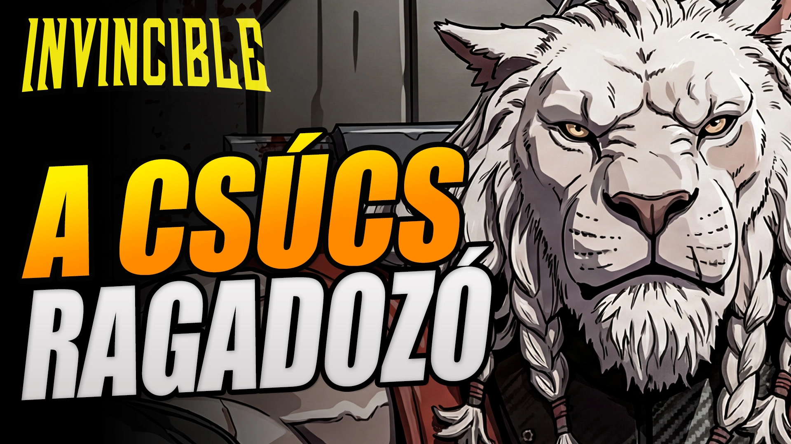
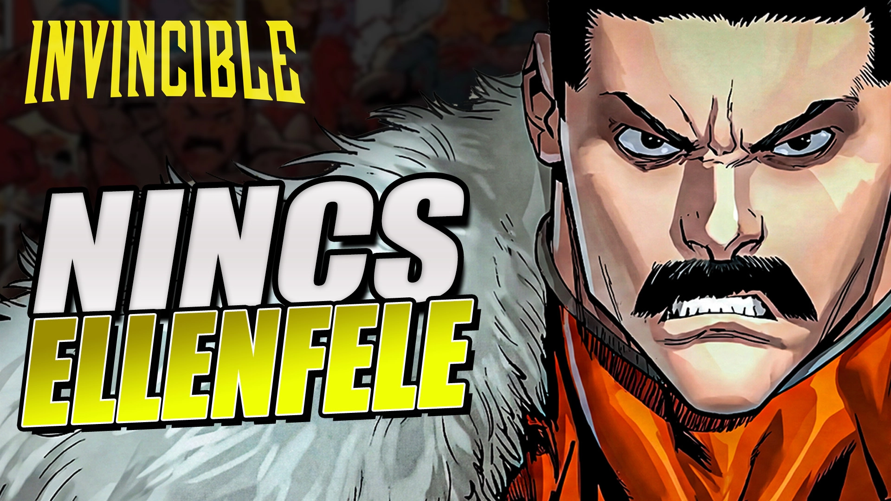
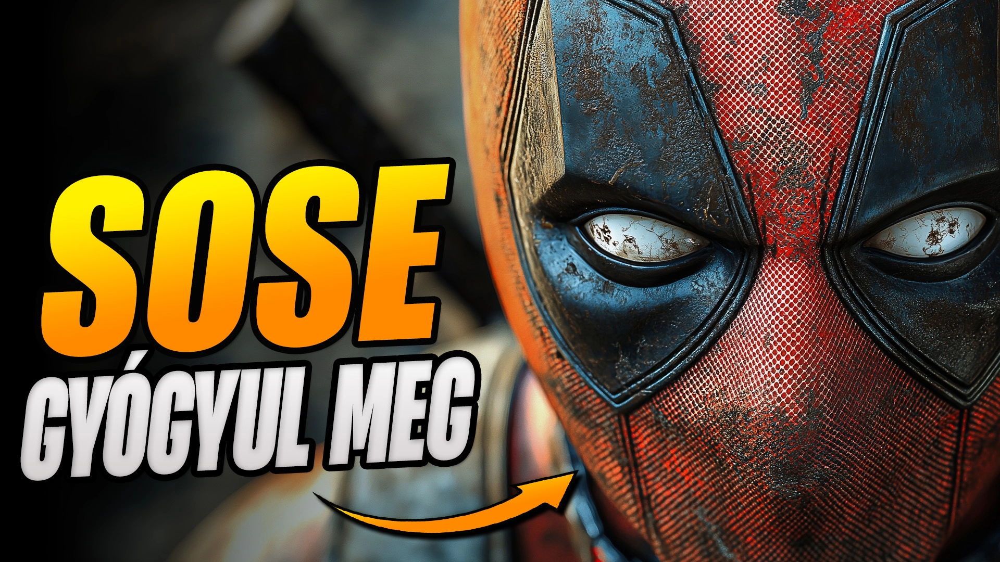
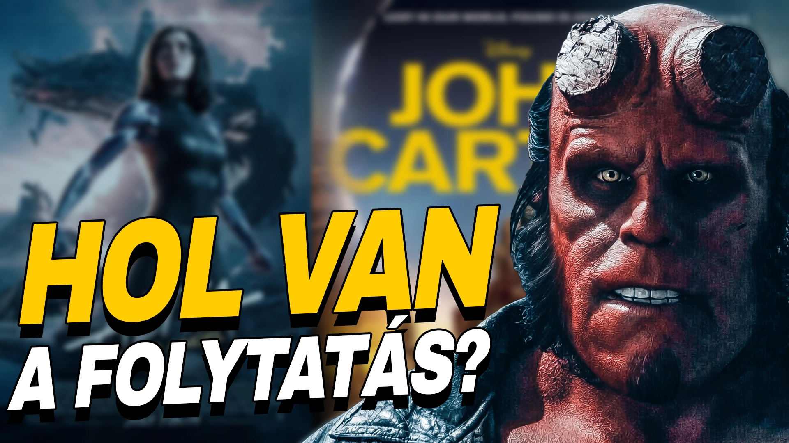
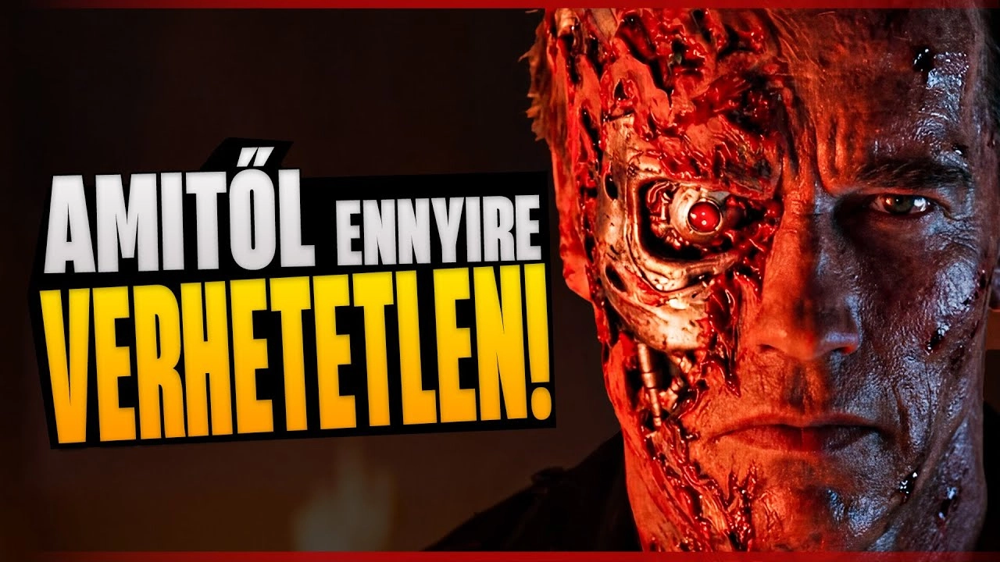
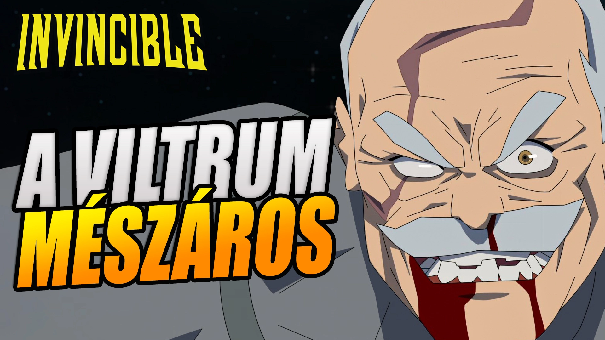

17E
Battle Beast: Akitől még a Viltrumiak is tartanak | Invincible karakter-elemzés
A YouTube-csatornámat 2025 júliusában indítottam új irányba, ahol a filmek, sorozatok és a geek kultúra áll a középpontban. Minden videó saját kutatásra, szövegírásra és narrációra épül, a thumbnailtől a vágásig minden munkafolyamatot én végzek.
A csatornán mélyebb elemzések, karakterbemutatók, élménybeszámolók és kibeszélők készülnek. Bár a feliratkozói bázis még épül, a csatorna már több tízezer megtekintést ért el, miközben a nézői megtartás és az átkattintási arány kiemelkedő eredményeket mutat. A folyamatos növekedés számomra azt igazolja, hogy az átgondolt tartalom és a következetes építkezés hosszú távon is működik.
Feliratkozás
Battle Beast: Akitől még a Viltrumiak is tartanak | Invincible karakter-elemzés

Thragg: A Viltrumi, Akitől Még Omni-Man Is Retteg | Invincible karakter-elemzés

Deadpool: A Marvel Legtragikusabb Hőse

Sosem Tudjuk Meg A Végét?

A Terminator 2 MA IS Megalázza a Blockbustereket

Conquest A Legbrutálisabb | Invincible karakter-elemzés
Szerény feliratkozószám, mégis stabil nézettség és kiemelkedő nézési idő.
Márka, ügynökség vagy szponzor vagy? Elkötelezett, niche közönség és erős nézési idő. Beszéljünk egy lehetséges együttműködésről.
Kapcsolat